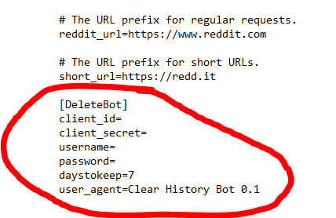
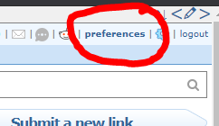
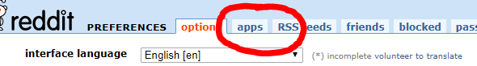
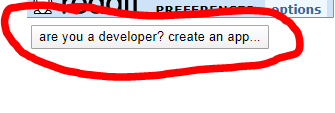
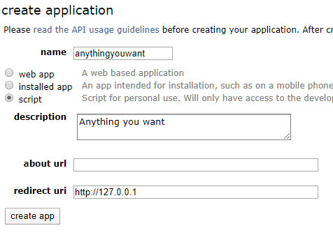
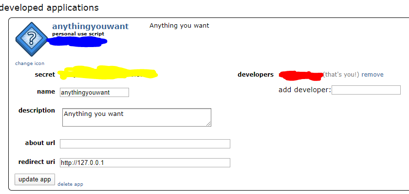

This is an open-source program to delete your reddit history.
This is free, made by me. There is no license, use it anyway you want to.
If you want to pay me for my efforts / donate, please donate via Bitcoin to one of the following two sweet addresses:
1PrAiseKEKmg9Hj2LjTxoAvMcvh6SaZ2uD -- Donate here if you just want to pay me for my work.
1MAgAtRUmptdZ6v29wxy32h6UEnXf4NmGC -- Donate here if you just are happy to live in this timeline because this was one lucky address find!
Source code: https://github.com/vfr2imc/WipeYourHistory
Or download directly from here:
- DeleteBot.py
- praw.ini
If you are running this from the source code, you will need to install the "praw" library using pip. Very easy, google it.
If you are a Windows user and don't want to bother with installing python, here is a self-contained executible: deletebot.zip
MD5: A62EAF1697A8BF22B43392B4B4DA00CD
Installation & Usage
Source Code Prep
- Install Python
- Install library "praw"
- Install library "time"
- Edit praw.ini file
Windows Prep
- Unzip into any folder
- Edit praw.ini file
Editing the praw.ini file
- Scroll down to where it says [DeleteBot]

- There are 5 values to edit.
- Username & Password are self-explanatory. Put in your reddit info for the account you want to clear.
- daystokeep is the days your comments and posts on reddit should survive. Anything older than the number listed there will be deleted (default is 7 days).
- The remaining two items (client_id and client_secret) require some action by you on Reddit.
- Go to http://old.reddit.com/
- Click "preferences"

- Click "apps"

- Click the button

- Fill out the app page

- Your client_id is under the BLUE marker. Your client_secret is under the YELLOW marker

- Copy & paste your client id & secret.
- You are done editing the praw.ini file!
Save and run the script.
It can only delete 500 old items per run-through. So if your account is years old, you may have to run this a few times.
If you set it in your start-up folder, it will continuously keep your reddit history clean.
595